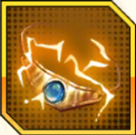

Rồng Thần Siêu Cấp
Tư Chất: 15
Hệ: Công
Kĩ Năng Chiến Binh
Skill
|
Năng Lượng Bùng Nổ
Broly SS4 tấn công mục tiêu có HP thấp nhất, giảm 200 Nộ, bản thân tăng 40% Tỷ lệ Kháng Bạo, nếu đánh trúng Saiyan, Sát thương tăng thêm 40%. |
|
MAX.Năng Lượng Bùng Nổ
Broly SS4 tấn công mục tiêu có HP thấp nhất, hút 200 Nộ, bản thân tăng 40% Tỷ lệ Kháng Bạo, nếu đánh trúng Saiyan, Sát thương tăng thêm 60%. Ở lượt kế tiếp, Tỷ lệ skill nhỏ tăng 30%, nếu bản thân có màn phòng thủ năng lượng sẽ tăng cường độ màn phòng thủ năng lượng lên tối đa. |
Tất Sát
|
Siêu Sao Băng
Broly SS4 tấn công hàng ngang, giải trừ trạng thái xấu của bản thân, tăng 20% Tỷ lệ Miễn Sát thương, mục tiêu giảm 20% Tỷ lệ Miễn Sát thương, hồi HP cho bản thân và đồng đội có Tỷ lệ HP thấp nhất bằng 30% tổng Sát thương. Nếu không kết liễu mục tiêu, có 50% Tỷ lệ phát động " Mưa Sao Băng " ( mỗi lượt 1 lần ): Hồi đầy Nộ, đổi sang Tất sát Mưa Sao Băng, tăng 15% Công Thủ, tấn công mục tiêu ngẫu nhiên ( ưu tiên mục tiêu dính Tất sát lần trước ), giải trạng thái buff của mục tiêu, đồng thời thi triển hiệu quả " Xé Toạc " ( mỗi lượt mất 8% HP tối đa, giảm 50% tất cả hiệu quả trị liệu nhận được, duy trì 2 lượt ), bản thân tăng tốc độ hồi Nộ, duy trì 2 lượt. |
|
MAX.Siêu Sao Băng
Broly SS4 tấn công hàng ngang, giải trừ trạng thái xấu của bản thân, tăng 30% Tỷ lệ Miễn Sát thương, mục tiêu giảm 30% Tỷ lệ Miễn Sát thương, hồi HP cho bản thân và đồng đội có Tỷ lệ HP thấp nhất bằng 40% tổng Sát thương. Nếu không kết liễu mục tiêu, chắc chắn phát động " Mưa Sao Băng " ( mỗi lượt 1 lần ): Hồi đầy Nộ, đổi sang Tất sát Mưa Sao Băng, tăng 20% Công Thủ, tấn công mục tiêu ngẫu nhiên ( ưu tiên mục tiêu dính Tất sát lần trước ), giải trạng thái buff của mục tiêu, đồng thời thi triển hiệu quả " Xé Toạc " ( mỗi lượt mất 8% HP tối đa, giảm 50% tất cả hiệu quả trị liệu nhận được, duy trì 2 lượt ), bản thân tăng tốc độ Hồi Nộ, duy trì 2 lượt. |
|
SMAX.Siêu Sao Băng
Broly SS4 tấn công hàng ngang, giải trừ trạng thái xấu của bản thân, tăng 35% Tỷ lệ Miễn Sát thương, mục tiêu giảm 30% Tỷ lệ Miễn Sát thương, hồi HP cho bản thân và đồng đội có Tỷ lệ HP thấp nhất bằng 50% tổng Sát thương. Nếu không kết liễu mục tiêu, chắc chắn phát động " Mưa Sao Băng " ( mỗi lượt 1 lần ): Hồi đầy Nộ, đổi sang Tất sát Mưa Sao Băng, tăng 25% Công Thủ, tấn công mục tiêu ngẫu nhiên ( ưu tiên mục tiêu dính Tất sát lần trước ), giải trạng thái buff của mục tiêu, đồng thời thi triển hiệu quả " Xé Toạc " ( mỗi lượt mất 10% HP tối đa, giảm 50% tất cả hiệu quả trị liệu nhận được, duy trì 2 lượt ), bản thân tăng tốc độ Hồi Nộ, duy trì 2 lượt. " Sao Băng Lấp Lánh " có 50% Tỷ lệ Cường hóa thành Siêu Sao Băng, gây thêm Sát thương bằng 150% Lực Công và gây cho kẻ địch xung quanh 20% Sát thương bắn lan, không gây Hồi Nộ. |
Nội tại
|
Cường Hóa Công HP
Bản thân tăng 5% Lực Công và HP ( lv1 ). |
|
Cự Viên Truyền Thuyết
Bản thân tăng 20% Cường độ Bạo ( lv1 ), cứ có 1 Chiến binh SS4 sẽ tăng 7% Tỷ lệ Bảo và Tỷ lệ Đỡ đòn, tối đa 28%, nếu ra trận mà cả 2 phe chỉ có 1 người sẽ tăng 15% Tỷ lệ Bạo và Tỷ lệ Đỡ đòn. Ở lượt 1 sẽ miễn dịch tất cả trạng thái xấu, cứ mỗi Chiến binh SS4 tử trận sẽ hồi 15% HP. Khi bị Sát thương chí tử sẽ không tử vong, hồi sinh với 40% HP, đoạt tất cả trạng thái buff và 300 Nộ của kẻ địch tấn công bản thân cuối cùng, mỗi trận phát động 1 lần. |
|
MAX.Cự Viên Truyền Thuyết
Bản thân tăng 20% Cường độ Bạo ( lv1 ), cứ có 1 Chiến binh SS4 sẽ tăng 8% Tỷ lệ Bạo và Tỷ lệ Đỡ đòn, tối đa 32%, nếu ra trận mà cả 2 phe chỉ có 1 người sẽ tăng 20% Tỷ lệ Bạo và Tỷ lệ Đỡ đòn. Ở lượt 1 sẽ miễn dịch tất cả trạng thái xấu, cứ mỗi Chiến binh SS4 tử trận sẽ hồi 15% HP và 50 Nộ. Khi bị Sát thương chí tử sẽ không tử vong, hồi sinh với 50% HP, đoạt tất cả trạng thái buff và 500 Nộ của kẻ địch tấn công bản thân cuối cùng, nhận thêm màn phòng thủ năng lượng ( tăng 30% Tỷ lệ Kháng Tất sát, mỗi lượt giảm đi 10% ), mỗi trận phát động 1 lần. |
Số Mệnh
| Hồn Bạch Hổ - Cao | Trong tất cả lối chơi, khi tấn công hoặc có Chiến binh tử trận sẽ nhận 80 Nộ, ban đầu nhận nhiều Nộ. |
|---|---|
| Duyên Phận | Thể Tiến Hóa Cuối Cùng: Có Gogeta SS4 , Công tăng 25%. |
| Tàn Ngược: Có Cumber , Công tăng 25%. | |
| Saiyan Gầm Gừ: Có Broly ( DBS ) , HP tăng 25%. | |
| Hồn Vũ Khí |  Hồn Dây Siêu Sức Mạnh SS4 |
| Tinh Phách Huy Chương |
 Huy chương
Cực Ác
Huy chương
Cực Ác
|
| Tính Phách Sách |
 Sách
Tà Năng
Sách
Tà Năng
|